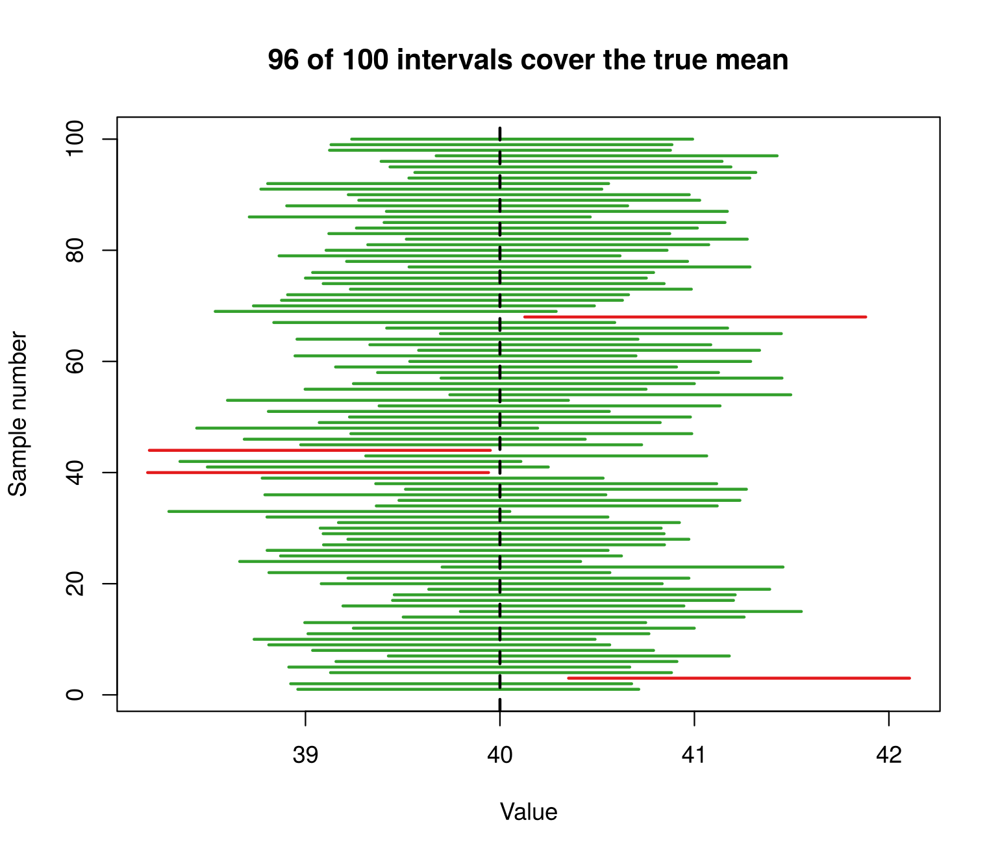
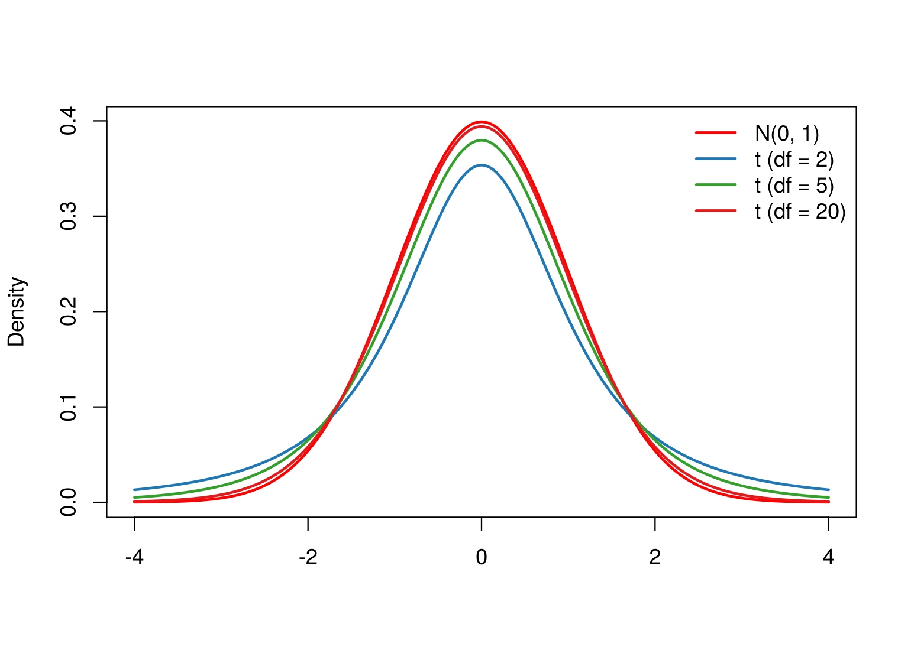
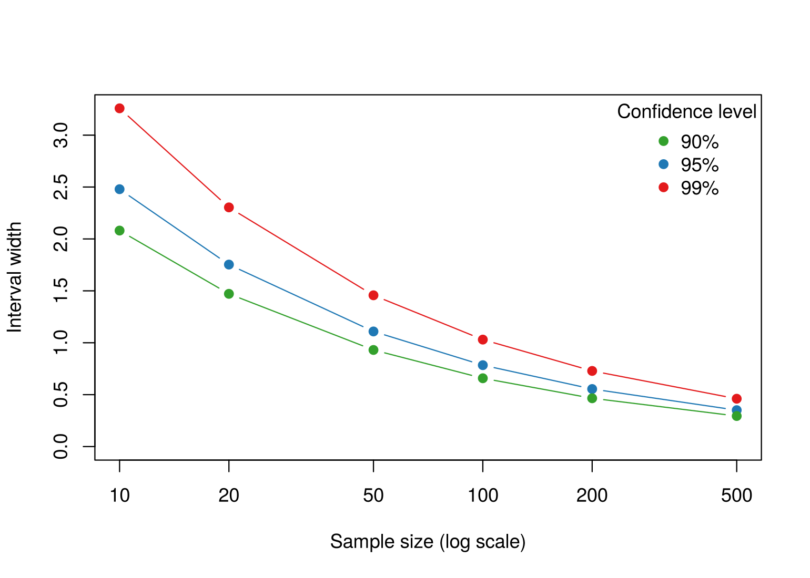

Session 6 of the course · Slides for this session
(PDF)
Learning goals. After this lesson you can
- explain what “95% confidence” refers to, and what it does not refer
to;
- compute a confidence interval for a mean by hand and with
t.test();
- describe how the sample size and the confidence level change the
width of an interval.
The question
We almost never know a population mean. We take one sample, compute
its mean, and want to say how far that estimate might be from the truth.
A confidence interval is a range of plausible values. But what exactly
is “95%” about it?
The answer is easiest to see. In a simulation we can do what
is impossible in real research: fix the true population mean, and then
draw many samples from the population.
An experiment with repeated sampling
The population is normal with mean \(\mu =
40\) and standard deviation \(\sigma =
2\). We draw a sample of \(n =
20\), compute the 95% confidence interval
\[\bar{x} \pm z_{0.975}
\frac{\sigma}{\sqrt{n}},\]
and repeat this 100 times. Each horizontal line below is one
interval. Intervals that cover the true mean are green; intervals that
miss it are red.
mu <- 40; sigma <- 2; n <- 20
repeats <- 100
conf_level <- 0.95
z <- qnorm(1 - (1 - conf_level) / 2)
lower <- upper <- numeric(repeats)
for (i in 1:repeats) {
x <- rnorm(n, mu, sigma)
margin <- z * sigma / sqrt(n)
lower[i] <- mean(x) - margin
upper[i] <- mean(x) + margin
}
covers <- lower <= mu & upper >= mu
plot(NULL, xlim = range(lower, upper), ylim = c(1, repeats),
xlab = "Value", ylab = "Sample number",
main = paste0(sum(covers), " of ", repeats, " intervals cover the true mean"))
segments(lower, 1:repeats, upper, 1:repeats, lwd = 2,
col = ifelse(covers, pal[4], pal[6]))
abline(v = mu, lwd = 2, lty = 2)

## [1] 0.96
Run the chunk again and the picture changes, but the proportion of
intervals that cover the true mean stays close to 95%. That is what the
confidence level describes: the long-run proportion of
intervals, produced by this procedure, that contain the true
value. Any single interval either contains \(\mu\) or it does not; we just cannot tell
which.
With many more repetitions the coverage rate gets very close to the
nominal level:
coverage <- function(n, conf_level, repeats = 10000) {
z <- qnorm(1 - (1 - conf_level) / 2)
means <- replicate(repeats, mean(rnorm(n, mu, sigma)))
mean(abs(means - mu) <= z * sigma / sqrt(n))
}
coverage(n = 20, conf_level = 0.95)
## [1] 0.95
coverage(n = 20, conf_level = 0.90)
## [1] 0.8938
When the population standard deviation is unknown: the t
interval
In practice we do not know \(\sigma\) and estimate it with the sample
standard deviation \(s\). The extra
uncertainty is handled by using the \(t\) distribution, which has heavier tails
than the normal distribution, especially for small samples:
x <- seq(-4, 4, 0.01)
plot(x, dnorm(x), type = "l", lwd = 2, col = "red", ylab = "Density", xlab = "")
for (k in 1:3) lines(x, dt(x, df = c(2, 5, 20)[k]), lwd = 2, col = pal[2 * k])
legend("topright", legend = c("N(0, 1)", "t (df = 2)", "t (df = 5)", "t (df = 20)"),
col = c("red", pal[c(2, 4, 6)]), lwd = 2, bty = "n")

The interval becomes \(\bar{x} \pm
t_{0.975,\,n-1}\, s/\sqrt{n}\). By hand and with
t.test():
x <- rnorm(20, mu, sigma)
mean(x) + c(-1, 1) * qt(0.975, df = 19) * sd(x) / sqrt(20)
## [1] 38.48107 40.00353
t.test(x, conf.level = 0.95)$conf.int
## [1] 38.48107 40.00353
## attr(,"conf.level")
## [1] 0.95
What makes an interval wider or narrower?
width <- function(n, conf_level) 2 * qnorm(1 - (1 - conf_level) / 2) * sigma / sqrt(n)
ns <- c(10, 20, 50, 100, 200, 500)
plot(ns, width(ns, 0.95), type = "b", pch = 19, col = pal[2], log = "x",
xlab = "Sample size (log scale)", ylab = "Interval width",
ylim = c(0, max(width(ns, 0.99))))
lines(ns, width(ns, 0.90), type = "b", pch = 19, col = pal[4])
lines(ns, width(ns, 0.99), type = "b", pch = 19, col = pal[6])
legend("topright", legend = c("90%", "95%", "99%"), col = pal[c(4, 2, 6)],
pch = 19, bty = "n", title = "Confidence level")

Larger samples give narrower intervals: the width shrinks with \(1/\sqrt{n}\), so halving the width requires
four times as many observations. A higher confidence level gives wider
intervals: more certainty that the procedure captures \(\mu\) costs precision.
Try it yourself
- Change
conf_level in the first simulation to 0.80.
Roughly how many of the 100 intervals should miss the true mean?
Check.
- Draw the samples from a skewed population instead, for example
rexp(n, rate = 1/40) (mean 40), and estimate the coverage
of the t interval for \(n = 5\), \(n = 20\) and \(n
= 100\). What do you notice, and how does it relate to the
central limit theorem from the lesson on probability and
simulation?
- A newspaper reports: “there is a 95% probability that the true mean
lies between 38.9 and 41.2.” Using the simulation, explain what is
imprecise about this sentence.
LS0tCnRpdGxlOiAiUGFyYW1ldGVyIGVzdGltYXRpb24gYW5kIGNvbmZpZGVuY2UgaW50ZXJ2YWxzIgotLS0KCmBgYHtyIHNldHVwLCBpbmNsdWRlPUZBTFNFfQprbml0cjo6b3B0c19jaHVuayRzZXQoZWNobyA9IFRSVUUsIGZpZy53aWR0aCA9IDcsIGZpZy5oZWlnaHQgPSA1LCBkcGkgPSAxMTApCmxpYnJhcnkoUkNvbG9yQnJld2VyKQpwYWwgPC0gYnJld2VyLnBhbCg4LCAiUGFpcmVkIikKc2V0LnNlZWQoNDApCmBgYAoKKlNlc3Npb24gNiBvZiB0aGUgW2NvdXJzZV0oaW5kZXguaHRtbCkgwrcgW1NsaWRlcyBmb3IgdGhpcyBzZXNzaW9uIChQREYpXShzbGlkZXMvMDYtcGFyYW1ldGVyLWVzdGltYXRpb24ucGRmKSoKCioqTGVhcm5pbmcgZ29hbHMuKiogQWZ0ZXIgdGhpcyBsZXNzb24geW91IGNhbgoKLSBleHBsYWluIHdoYXQgIjk1JSBjb25maWRlbmNlIiByZWZlcnMgdG8sIGFuZCB3aGF0IGl0IGRvZXMgbm90IHJlZmVyIHRvOwotIGNvbXB1dGUgYSBjb25maWRlbmNlIGludGVydmFsIGZvciBhIG1lYW4gYnkgaGFuZCBhbmQgd2l0aCBgdC50ZXN0KClgOwotIGRlc2NyaWJlIGhvdyB0aGUgc2FtcGxlIHNpemUgYW5kIHRoZSBjb25maWRlbmNlIGxldmVsIGNoYW5nZSB0aGUgd2lkdGggb2YgYW4KICBpbnRlcnZhbC4KCiMjIFRoZSBxdWVzdGlvbgoKV2UgYWxtb3N0IG5ldmVyIGtub3cgYSBwb3B1bGF0aW9uIG1lYW4uIFdlIHRha2Ugb25lIHNhbXBsZSwgY29tcHV0ZSBpdHMgbWVhbiwKYW5kIHdhbnQgdG8gc2F5IGhvdyBmYXIgdGhhdCBlc3RpbWF0ZSBtaWdodCBiZSBmcm9tIHRoZSB0cnV0aC4gQSBjb25maWRlbmNlCmludGVydmFsIGlzIGEgcmFuZ2Ugb2YgcGxhdXNpYmxlIHZhbHVlcy4gQnV0IHdoYXQgZXhhY3RseSBpcyAiOTUlIiBhYm91dCBpdD8KClRoZSBhbnN3ZXIgaXMgZWFzaWVzdCB0byAqc2VlKi4gSW4gYSBzaW11bGF0aW9uIHdlIGNhbiBkbyB3aGF0IGlzIGltcG9zc2libGUgaW4KcmVhbCByZXNlYXJjaDogZml4IHRoZSB0cnVlIHBvcHVsYXRpb24gbWVhbiwgYW5kIHRoZW4gZHJhdyBtYW55IHNhbXBsZXMgZnJvbQp0aGUgcG9wdWxhdGlvbi4KCiMjIEFuIGV4cGVyaW1lbnQgd2l0aCByZXBlYXRlZCBzYW1wbGluZwoKVGhlIHBvcHVsYXRpb24gaXMgbm9ybWFsIHdpdGggbWVhbiAkXG11ID0gNDAkIGFuZCBzdGFuZGFyZCBkZXZpYXRpb24KJFxzaWdtYSA9IDIkLiBXZSBkcmF3IGEgc2FtcGxlIG9mICRuID0gMjAkLCBjb21wdXRlIHRoZSA5NSUgY29uZmlkZW5jZSBpbnRlcnZhbAoKJCRcYmFye3h9IFxwbSB6X3swLjk3NX0gXGZyYWN7XHNpZ21hfXtcc3FydHtufX0sJCQKCmFuZCByZXBlYXQgdGhpcyAxMDAgdGltZXMuIEVhY2ggaG9yaXpvbnRhbCBsaW5lIGJlbG93IGlzIG9uZSBpbnRlcnZhbC4gSW50ZXJ2YWxzCnRoYXQgY292ZXIgdGhlIHRydWUgbWVhbiBhcmUgZ3JlZW47IGludGVydmFscyB0aGF0IG1pc3MgaXQgYXJlIHJlZC4KCmBgYHtyIGNvdmVyYWdlLCBmaWcuaGVpZ2h0ID0gNn0KbXUgPC0gNDA7IHNpZ21hIDwtIDI7IG4gPC0gMjAKcmVwZWF0cyA8LSAxMDAKY29uZl9sZXZlbCA8LSAwLjk1CnogPC0gcW5vcm0oMSAtICgxIC0gY29uZl9sZXZlbCkgLyAyKQoKbG93ZXIgPC0gdXBwZXIgPC0gbnVtZXJpYyhyZXBlYXRzKQpmb3IgKGkgaW4gMTpyZXBlYXRzKSB7CiAgeCA8LSBybm9ybShuLCBtdSwgc2lnbWEpCiAgbWFyZ2luIDwtIHogKiBzaWdtYSAvIHNxcnQobikKICBsb3dlcltpXSA8LSBtZWFuKHgpIC0gbWFyZ2luCiAgdXBwZXJbaV0gPC0gbWVhbih4KSArIG1hcmdpbgp9CmNvdmVycyA8LSBsb3dlciA8PSBtdSAmIHVwcGVyID49IG11CgpwbG90KE5VTEwsIHhsaW0gPSByYW5nZShsb3dlciwgdXBwZXIpLCB5bGltID0gYygxLCByZXBlYXRzKSwKICAgICB4bGFiID0gIlZhbHVlIiwgeWxhYiA9ICJTYW1wbGUgbnVtYmVyIiwKICAgICBtYWluID0gcGFzdGUwKHN1bShjb3ZlcnMpLCAiIG9mICIsIHJlcGVhdHMsICIgaW50ZXJ2YWxzIGNvdmVyIHRoZSB0cnVlIG1lYW4iKSkKc2VnbWVudHMobG93ZXIsIDE6cmVwZWF0cywgdXBwZXIsIDE6cmVwZWF0cywgbHdkID0gMiwKICAgICAgICAgY29sID0gaWZlbHNlKGNvdmVycywgcGFsWzRdLCBwYWxbNl0pKQphYmxpbmUodiA9IG11LCBsd2QgPSAyLCBsdHkgPSAyKQpgYGAKCmBgYHtyIGNvdmVyYWdlLXJhdGV9Cm1lYW4oY292ZXJzKQpgYGAKClJ1biB0aGUgY2h1bmsgYWdhaW4gYW5kIHRoZSBwaWN0dXJlIGNoYW5nZXMsIGJ1dCB0aGUgcHJvcG9ydGlvbiBvZiBpbnRlcnZhbHMKdGhhdCBjb3ZlciB0aGUgdHJ1ZSBtZWFuIHN0YXlzIGNsb3NlIHRvIDk1JS4gVGhhdCBpcyB3aGF0IHRoZSBjb25maWRlbmNlIGxldmVsCmRlc2NyaWJlczogKip0aGUgbG9uZy1ydW4gcHJvcG9ydGlvbiBvZiBpbnRlcnZhbHMsIHByb2R1Y2VkIGJ5IHRoaXMgcHJvY2VkdXJlLAp0aGF0IGNvbnRhaW4gdGhlIHRydWUgdmFsdWUuKiogQW55IHNpbmdsZSBpbnRlcnZhbCBlaXRoZXIgY29udGFpbnMgJFxtdSQgb3IgaXQKZG9lcyBub3Q7IHdlIGp1c3QgY2Fubm90IHRlbGwgd2hpY2guCgpXaXRoIG1hbnkgbW9yZSByZXBldGl0aW9ucyB0aGUgY292ZXJhZ2UgcmF0ZSBnZXRzIHZlcnkgY2xvc2UgdG8gdGhlIG5vbWluYWwKbGV2ZWw6CgpgYGB7ciBjb3ZlcmFnZS1tYW55fQpjb3ZlcmFnZSA8LSBmdW5jdGlvbihuLCBjb25mX2xldmVsLCByZXBlYXRzID0gMTAwMDApIHsKICB6IDwtIHFub3JtKDEgLSAoMSAtIGNvbmZfbGV2ZWwpIC8gMikKICBtZWFucyA8LSByZXBsaWNhdGUocmVwZWF0cywgbWVhbihybm9ybShuLCBtdSwgc2lnbWEpKSkKICBtZWFuKGFicyhtZWFucyAtIG11KSA8PSB6ICogc2lnbWEgLyBzcXJ0KG4pKQp9CmNvdmVyYWdlKG4gPSAyMCwgY29uZl9sZXZlbCA9IDAuOTUpCmNvdmVyYWdlKG4gPSAyMCwgY29uZl9sZXZlbCA9IDAuOTApCmBgYAoKIyMgV2hlbiB0aGUgcG9wdWxhdGlvbiBzdGFuZGFyZCBkZXZpYXRpb24gaXMgdW5rbm93bjogdGhlIHQgaW50ZXJ2YWwKCkluIHByYWN0aWNlIHdlIGRvIG5vdCBrbm93ICRcc2lnbWEkIGFuZCBlc3RpbWF0ZSBpdCB3aXRoIHRoZSBzYW1wbGUgc3RhbmRhcmQKZGV2aWF0aW9uICRzJC4gVGhlIGV4dHJhIHVuY2VydGFpbnR5IGlzIGhhbmRsZWQgYnkgdXNpbmcgdGhlICR0JCBkaXN0cmlidXRpb24sCndoaWNoIGhhcyBoZWF2aWVyIHRhaWxzIHRoYW4gdGhlIG5vcm1hbCBkaXN0cmlidXRpb24sIGVzcGVjaWFsbHkgZm9yIHNtYWxsCnNhbXBsZXM6CgpgYGB7ciB0LWRpc3R9CnggPC0gc2VxKC00LCA0LCAwLjAxKQpwbG90KHgsIGRub3JtKHgpLCB0eXBlID0gImwiLCBsd2QgPSAyLCBjb2wgPSAicmVkIiwgeWxhYiA9ICJEZW5zaXR5IiwgeGxhYiA9ICIiKQpmb3IgKGsgaW4gMTozKSBsaW5lcyh4LCBkdCh4LCBkZiA9IGMoMiwgNSwgMjApW2tdKSwgbHdkID0gMiwgY29sID0gcGFsWzIgKiBrXSkKbGVnZW5kKCJ0b3ByaWdodCIsIGxlZ2VuZCA9IGMoIk4oMCwgMSkiLCAidCAoZGYgPSAyKSIsICJ0IChkZiA9IDUpIiwgInQgKGRmID0gMjApIiksCiAgICAgICBjb2wgPSBjKCJyZWQiLCBwYWxbYygyLCA0LCA2KV0pLCBsd2QgPSAyLCBidHkgPSAibiIpCmBgYAoKVGhlIGludGVydmFsIGJlY29tZXMgJFxiYXJ7eH0gXHBtIHRfezAuOTc1LFwsbi0xfVwsIHMvXHNxcnR7bn0kLiBCeSBoYW5kIGFuZCB3aXRoCmB0LnRlc3QoKWA6CgpgYGB7ciB0LWludGVydmFsfQp4IDwtIHJub3JtKDIwLCBtdSwgc2lnbWEpCm1lYW4oeCkgKyBjKC0xLCAxKSAqIHF0KDAuOTc1LCBkZiA9IDE5KSAqIHNkKHgpIC8gc3FydCgyMCkKdC50ZXN0KHgsIGNvbmYubGV2ZWwgPSAwLjk1KSRjb25mLmludApgYGAKCiMjIFdoYXQgbWFrZXMgYW4gaW50ZXJ2YWwgd2lkZXIgb3IgbmFycm93ZXI/CgpgYGB7ciB3aWR0aH0Kd2lkdGggPC0gZnVuY3Rpb24obiwgY29uZl9sZXZlbCkgMiAqIHFub3JtKDEgLSAoMSAtIGNvbmZfbGV2ZWwpIC8gMikgKiBzaWdtYSAvIHNxcnQobikKbnMgPC0gYygxMCwgMjAsIDUwLCAxMDAsIDIwMCwgNTAwKQpwbG90KG5zLCB3aWR0aChucywgMC45NSksIHR5cGUgPSAiYiIsIHBjaCA9IDE5LCBjb2wgPSBwYWxbMl0sIGxvZyA9ICJ4IiwKICAgICB4bGFiID0gIlNhbXBsZSBzaXplIChsb2cgc2NhbGUpIiwgeWxhYiA9ICJJbnRlcnZhbCB3aWR0aCIsCiAgICAgeWxpbSA9IGMoMCwgbWF4KHdpZHRoKG5zLCAwLjk5KSkpKQpsaW5lcyhucywgd2lkdGgobnMsIDAuOTApLCB0eXBlID0gImIiLCBwY2ggPSAxOSwgY29sID0gcGFsWzRdKQpsaW5lcyhucywgd2lkdGgobnMsIDAuOTkpLCB0eXBlID0gImIiLCBwY2ggPSAxOSwgY29sID0gcGFsWzZdKQpsZWdlbmQoInRvcHJpZ2h0IiwgbGVnZW5kID0gYygiOTAlIiwgIjk1JSIsICI5OSUiKSwgY29sID0gcGFsW2MoNCwgMiwgNildLAogICAgICAgcGNoID0gMTksIGJ0eSA9ICJuIiwgdGl0bGUgPSAiQ29uZmlkZW5jZSBsZXZlbCIpCmBgYAoKTGFyZ2VyIHNhbXBsZXMgZ2l2ZSBuYXJyb3dlciBpbnRlcnZhbHM6IHRoZSB3aWR0aCBzaHJpbmtzIHdpdGggJDEvXHNxcnR7bn0kLCBzbwpoYWx2aW5nIHRoZSB3aWR0aCByZXF1aXJlcyBmb3VyIHRpbWVzIGFzIG1hbnkgb2JzZXJ2YXRpb25zLiBBIGhpZ2hlcgpjb25maWRlbmNlIGxldmVsIGdpdmVzIHdpZGVyIGludGVydmFsczogbW9yZSBjZXJ0YWludHkgdGhhdCB0aGUgcHJvY2VkdXJlCmNhcHR1cmVzICRcbXUkIGNvc3RzIHByZWNpc2lvbi4KCiMjIFRyeSBpdCB5b3Vyc2VsZgoKMS4gQ2hhbmdlIGBjb25mX2xldmVsYCBpbiB0aGUgZmlyc3Qgc2ltdWxhdGlvbiB0byAwLjgwLiBSb3VnaGx5IGhvdyBtYW55IG9mIHRoZQogICAxMDAgaW50ZXJ2YWxzIHNob3VsZCBtaXNzIHRoZSB0cnVlIG1lYW4/IENoZWNrLgoyLiBEcmF3IHRoZSBzYW1wbGVzIGZyb20gYSBza2V3ZWQgcG9wdWxhdGlvbiBpbnN0ZWFkLCBmb3IgZXhhbXBsZQogICBgcmV4cChuLCByYXRlID0gMS80MClgIChtZWFuIDQwKSwgYW5kIGVzdGltYXRlIHRoZSBjb3ZlcmFnZSBvZiB0aGUgdAogICBpbnRlcnZhbCBmb3IgJG4gPSA1JCwgJG4gPSAyMCQgYW5kICRuID0gMTAwJC4gV2hhdCBkbyB5b3Ugbm90aWNlLCBhbmQgaG93CiAgIGRvZXMgaXQgcmVsYXRlIHRvIHRoZSBjZW50cmFsIGxpbWl0IHRoZW9yZW0gZnJvbSB0aGUgbGVzc29uIG9uIHByb2JhYmlsaXR5IGFuZCBzaW11bGF0aW9uPwozLiBBIG5ld3NwYXBlciByZXBvcnRzOiAidGhlcmUgaXMgYSA5NSUgcHJvYmFiaWxpdHkgdGhhdCB0aGUgdHJ1ZSBtZWFuIGxpZXMKICAgYmV0d2VlbiAzOC45IGFuZCA0MS4yLiIgVXNpbmcgdGhlIHNpbXVsYXRpb24sIGV4cGxhaW4gd2hhdCBpcyBpbXByZWNpc2UKICAgYWJvdXQgdGhpcyBzZW50ZW5jZS4K
Jiayun Jin · Text and figures licensed under CC BY 4.0; code under the MIT License.